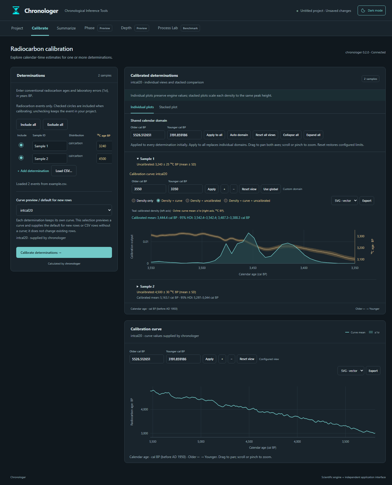

Start with your evidence
Import radiocarbon dates from CSV or enter them directly. Compare individual and stacked calibrations using IntCal20.
 Chronologer
Chronologer
Chronological Inference Engine · Windows beta
Radiocarbon calibration and Bayesian chronological modelling, without scripting. Bring your dates together, make your assumptions explicit, and explore when events happened and the processes that shaped them.
Download the Windows betav0.1.0-beta.1 · Windows 64-bit · No Python installation needed

Import radiocarbon dates from CSV or enter them directly. Compare individual and stacked calibrations using IntCal20.
Fit single-density and mixture models, or estimate event intensity with a Gaussian-process point-process model.
Review MCMC diagnostics, export figures, and save inputs and results together in a portable project.
Try it with your dates
Run ChronoApp.exe inside the extracted folder. The local application opens in your browser. Example CSVs are included in docs/examples/.
Inspect results critically and check MCMC diagnostics before scientific use.
Report a problemNo data entry needed
The Windows ZIP includes made-up test datasets in ChronoApp/docs/examples/. Start with 20 example dates, or explore mixture modelling with 60 dates in three groups.
Choose Project → Import CSV in the app and select a file. These are synthetic examples, not archaeological observations. The example guide gives suggested model settings.